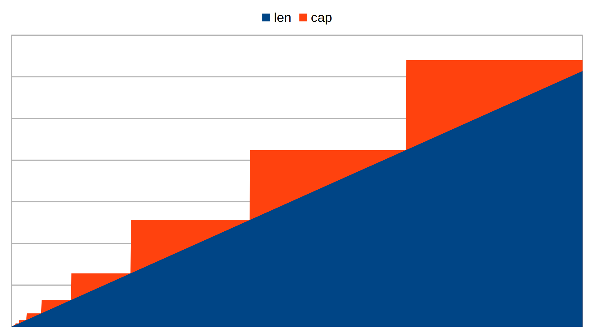

The design of arrays and slices in Go took almost a year! This foundational functionality is essential to understand if you want to write efficient code. After working through this material, you’ll be able to manipulate slices naturally.
Let’s start with a quick check. What does the following snippet print?
a := []int{1, 2, 3, 4, 5, 6, 7}
b := append(a[:3], a[5:]...)
fmt.Printf("%v, len(b) = %d, cap(b) = %d", b, len(b), cap(b))Answer choices:
1. [1 2 5 6 7], len(b) = 5, cap(b) = 5 2. [1 2 3 5 6 7], len(b) = 6, cap(b) = 6 3. [1 2 3 6 7], len(b) = 5, cap(b) = 7 4. [1 2 3 6 7], len(b) = 5, cap(b) = 5 5. [1 2 3 4 6 7], len(b) = 6, cap(b) = 6 6. [1 2 3 7], len(b) = 4, cap(b) = 4
Answer: 3. [1 2 3 6 7], len(b) = 5, cap(b) = 7
Even an experienced Go developer can get tripped up by this.
To understand slices, you first have to understand arrays. The line
var buf1 [2]bytedeclares a variable buf1 that contains exactly 2 bytes. You cannot change an array’s length! If you need to store more than 2 bytes, you create a new array of the required size:
var buf1 [2]byte
buf1[0], buf1[1] = 78, 73
var buf2 [4]byte // 4-byte array
buf2[0], buf2[1] = buf1[0], buf1[1] // copy buf1 into buf2
buf2[2], buf2[3] = 67, 69 // additional data
fmt.Println(buf2)
// Output:
// [78 73 67 69]Where do arrays show up? Programs often operate on fixed units of data—bytes, packets, memory pages. In all these cases, the unit’s size (i.e., number of bytes) is known in advance. For example, an IPv4 address is 4 bytes, and an IPv6 address is 6 bytes. A sha512 checksum is 64 bytes. The ASCII table describes how to interpret 7 bits of a single byte for character data. A chessboard is always 64 squares. A PostgreSQL page is 8192 bytes (you can change it, but you have to recompile the DBMS).
Finally, slices—behind the scenes—use arrays! At runtime, only slices can create an array of length n. Array lengths are always fixed before the program is compiled. We’ll come back to slices after arrays. For now, pretend slices don’t exist in Go.
When you create an array, a contiguous block of memory is allocated, and the variable’s name lets you access that memory directly. The array’s address is the same as the address of its first element:
a := [...]byte{1, 2, 3} // "..." becomes 3
fmt.Printf("%p, %p", &a, &a[0]) // addresses match
The simplest way to picture arrays is as a struct where all fields share the same type:
| Structure | Array | |
|---|---|---|
| Declaration |
|
|
| Accessing data | By field name
|
By element index
|
| Can its size change? | No, the field set is known at compile time | No, the length is known at compile time |
| Copied when passed to a function |
|
|
You access a struct field by name and an array element by index. You cannot add a new field to a struct at runtime. Likewise with arrays—their size is constant for the lifetime of the program.
Note that passing a large array to a function is memory-wasteful because it gets copied. You can avoid copying by passing a pointer to the array:
f := func(ti *[3]byte) {
fmt.Println(ti)
}
a := &[3]byte{1, 2, 3}
f(a)Can you compare two arrays?
checksum1 := sha512.Sum512([]byte{'x', 'y', '1'}) // Sum512() returns [64]byte
checksum2 := sha512.Sum512([]byte{'x', 'y', '2'})
fmt.Println(checksum1 == checksum2)Just like structs, arrays are comparable if they contain comparable types.
comparable
You cannot compare slices, maps, or functions (func)! That means you also cannot compare arrays or structs that contain slices, maps, or functions:
type s struct {
fn func()
}
func1 := func() { fmt.Println("I'm func1!") }
s1 := s{func1}
s2 := s{func1}
fmt.Println(func1 == nil) // OK
fmt.Println(func1 == func1) // INVALID OPERATION!
fmt.Println(s1 == s2) // INVALID OPERATION!
The only exception is comparing slices, maps, and functions to nil.
You can read more about comparable in the Go spec.
In practice, arrays are rarely used precisely because an array’s size can only be a constant!
Imagine slices are unavailable. You want to ask the user for the number of items n in an
order and create an array of length n. In Go that’s impossible:
type item struct {
price, qty int
}
var n int
_, err := fmt.Scanf("%d", &n)
if err != nil {
panic(err)
}
var order [n]item // WON’T COMPILE
// you cannot create an array of n items
You can still solve the problem using only arrays. Think about possible approaches.
A simple approach is to create a very large array that can fit almost any order:
// previous code omitted where
// n is the number of items the user entered
var order [100]item

When working with the order, you must always take n into account, i.e.,
how many elements of order contain meaningful data. In the figure, n = 2,
so only the first two elements hold user data.
The remaining space may come in handy if items are added later.
We can improve the previous approach.
It’s convenient to group the items and their count n into a struct.
Let’s call it itemsHeader:
const itemsCap = 100 // array capacity
type itemsHeader struct {
items [itemsCap]item
n int
}
var order1 itemsHeader
order1.n = n
// fill order1.items with user data
Our solution is still suboptimal: every time you pass order1 as a function argument,
its entire contents will be copied along with the 100-element array.
To avoid copying, keep only a pointer to the array:
const itemsCap = 100
type itemsHeader struct {
items *[itemsCap]item
n int
}
Now we can operate on the order and pass it to functions
without the overhead of copying the underlying (backing) array items.
The drawback is obvious: we always need memory for itemsCap = 100 items,
even if there are only 2–3.
Arrays in Go are for data whose size is known at compile time!
Here’s a full implementation that prints the order’s contents—using only arrays:
const itemsCap = 100 // capacity of the items array
type itemsHeader struct {
items *[itemsCap]item // pointer to the array
n int // logical length
}
type item struct {
price, qty int
}
func (h *itemsHeader) print(w io.Writer) {
for i := 0; i < h.n; i++ {
fmt.Fprintf(w, "%d: $%d x %d\n", i, h.items[i].price, h.items[i].qty)
}
}
func main() {
order1 := itemsHeader{new([itemsCap]item), 2}
order1.items[0] = item{17, 1}
order1.items[1] = item{29, 2}
order1.print(os.Stdout)
// Output:
// 0: $17 x 1
// 1: $29 x 2
}
The length n denotes the number of items in the order;
changing it lets us add or remove items at runtime.
For convenient appends we can write:
func (h *itemsHeader) appendItem(i item) {
if h.n == itemsCap-1 {
panic("overflow")
}
h.items[h.n] = i
h.n++ // increase logical length
}
We’ve covered appending—how do we delete element i from a slice?
First, consider how we’d do it with arrays. The simplest way, without preserving order,
is to replace element i with the last element and decrement the header’s logical length n:
func (h *itemsHeader) remove(i int) {
if i >= h.n {
panic("out of bound")
}
if i != h.n-1 {
h.items[i] = h.items[h.n-1]
}
h.n--
}If we want to preserve order, we need to shift all elements left:

For this, the built-in copy is convenient (see below).
For us—as for Go’s designers—it’s obvious that dynamic-length arrays,
appending, and deleting elements are extremely common in practice.
We showcased helper functions for arrays, but writing a bespoke itemsHeader,
appendItem, removeItem, etc., for every case would be cumbersome.
Fortunately, Go has a simple, convenient mechanism for variable-length arrays: slices.
Slices are structured almost exactly like the itemsHeader from the previous example.
Let’s create a slice with length 2 and capacity 100 using the built-in make:
length := 2
capacity := 100
order1 := make([]item, length, capacity)
This call creates an array of capacity elements and returns a structure (highlighted in green) like this:

This structure describes a slice and is called the slice header.
The header contains a pointer to the array, array, and the slice’s length len and capacity cap.
Just like our itemsHeader.
Note that the make constructor for slices can take variables for length and capacity!
That means for slices—and only slices—we can ask the user for sizes at runtime and allocate
the required memory.
You can think of a slice header (or simply, a slice)
as a flashlight that “illuminates” the len elements of the array you can access
(the accessible elements are shaded blue).
zero vs empty
You can declare a slice without creating an array:
var a []byte
This creates a runtime.slice value whose fields are all zero-values.
The array pointer is also zero, i.e., nil. In Go, as in most languages,
the address 0x0 is treated as nil.
If you declare a slice with zero elements like this:
a := []byte{}
the runtime.slice looks different: the length and capacity are zero, and the address is a special one,
runtime.zerobase. Go uses this address for empty strings, structs, and slices
to avoid unnecessary allocations.
For comparison, in C you often see functions that take a pointer to the first element of an array and its length (the number of consecutive elements to process):
void sum(int *data, size_t len, long *out) {
long s = 0;
for (size_t i = 0; i < len; ++i) s += data[i];
*out = s;
}
Of course, C has third-party libraries that provide slice-like functionality (e.g., GLib).
Fortunately, Go’s designers considered “array + length” important enough to build into the language—thus, slices.
In Go, keeping the same bit widths (C’s int and long correspond to Go’s
int32 and int64), the function looks like this:
func sum(data []int32) (out int64) {
for _, v := range data {
out += int64(v)
}
return
}
Here data is a slice; it already carries a pointer to the array and its length.
The slice header is hidden from the programmer.
When you hear “slice,” think: a struct with a pointer to an array plus len and cap.
Every time you manipulate a slice, you’re really working with that struct.
To inspect a slice’s header fields use the built-ins: len() returns the length, cap() the capacity.
There are several ways to create a slice.
The built-in generic function make is the most versatile.
make takes a length and an optional capacity (the third argument).
Now we can decide at runtime what array length and capacity we need:
type item struct {
price, qty int
}
var capacity int
_, err := fmt.Scanf("%d", &capacity)
if err != nil {
panic(err)
}
order1 := make([]item, 0, capacity) // reserve an array with the required capacity
fmt.Println(len(order1)) // prints 0
fmt.Println(cap(order1)) // prints the value of capacity
// ...populate order1 with itemsPreviously—using only arrays—we created an order with the maximum capacity (e.g., 100 elements) even if we needed just a few. Now the order has exactly the required capacity—no memory waste.
In order1, the length is 0, so even though capacity is sufficient, it contains no useful data.
Suppose the user entered 1 in the example above—they know they’ll buy only one item—so
the constructor was make([]item, 0, 1). Here are the resulting slice header and its array:

How do we add an item to this slice? Use the built-in generic append:
order1 = append(order1, item{25, 1})
If the array’s capacity allows it, append writes the new element to the array and increases the slice’s len:

append reallocates the array
Some time later the user wants to buy one more item.
What happens if you append another element to order1 even though its capacity allows only one?
order1 := append(order1, item{16,2})
fmt.Println(len(order1), cap(order1)) // prints 2 2
In this case append creates a new, larger array, copies the old array’s content into it,
adds the new element, and finally returns a new slice header pointing to the newly created array:

The old array is marked as garbage and will be collected soon.
Note that a slice’s capacity grows in steps as you keep appending:

Go chooses the next capacity (the step height) based on the element’s byte size.
For single-byte elements like []byte, growth is very fast at first but slows quickly.
For multi-byte elements like []item, the slowdown happens earlier.
The general rule: capacity grows quickly for the first few reallocations,
then drops sharply and tends toward ~25% growth per subsequent reallocation.
Go is frugal with memory.
If this strategy doesn’t suit you, you can always write your own version of append.
slicing
As we’ve seen, a slice doesn’t store data; it just points to an array.
That means by adjusting the pointer and len, we can access a portion of the underlying array.
Slicing takes a portion of a slice, array, or string by index using s[low:high],
where low is the starting index (inclusive) and high is the ending index (exclusive).
The result is a new slice pointing to the same array:
s1 := []rune("drum✨icicle")
s2 := s1[3:7]
fmt.Println(string(s2)) // "m✨ic"
s2’s capacity is 8, which allows slicing like:
fmt.Println(string(s2[0:8])) // "m✨icicle"
// same as:
fmt.Println(string(s2[:cap(s2)])) // "m✨icicle"no shifting left
In a slice expression s[low:high], low is non-negative.
That means you cannot move the pointer to earlier array elements:
f := func() []byte {
s := []byte{10,20,30,40,50}
return s[2:]
}
fmt.Println(f()) // "[30 40 50]"
fmt.Println(f()[-2:]) // ERROR
Outside f you can no longer access s[0] = 10 or s[1] = 20.
Slicing only lets you shift the pointer to the right!
The code above also illustrates a memory leak. We retained memory that we can no longer use.
memory leak
Let’s look at a simplified example of a leak.
The function title() returns the <title> of an HTML page:
func title(html []byte) []byte {
start := bytes.Index(html, []byte("<title>"))
if start == -1 { return nil }
start += len("<title>")
titleLen := bytes.Index(html[start:], []byte("</title>"))
if titleLen == -1 { return nil }
return html[start : start+titleLen] // PROBLEM!
}
Notice the last line returns a slice.
That means as long as the result of title() is kept anywhere, the entire HTML page will be kept alive too.
Suppose we’re writing a web scraper that collects page titles and caches them for later use:
var cache map[string][]byte // map of URL to <title>
type webScraper interface {
Next() bool
URL() string
HTML() []byte
}
func cacheURLsTitles(ws webScraper) {
if cache == nil { cache = make(map[string][]byte) }
for ws.Next() {
cache[ws.URL()] = title(ws.HTML()) // PROBLEM!
}
}An array won’t be freed as long as at least one slice still points to it. Be especially careful when working with large arrays!
The correct approach is to copy the title into a new array.
copy()
To avoid leaks, copy the found title with a simple loop:
func title(html []byte) []byte {
// Same as before ...
// Copying
result := make([]byte, titleLen)
for i := range result {
result[i] = respBody[start+i]
}
return result
}
You can also use the built-in copy(dst, src), which does the same:
result := make([]byte, titleLen)
copy(result, respBody[start:])
Arrays are fixed-size values; slices are lightweight headers that point to arrays and carry len/cap.
In day-to-day Go, you’ll mostly use slices—just remember they share backing arrays: append may reallocate,
slicing can keep large buffers alive, and copy breaks unwanted ties.
Master these mechanics and you’ll write code that’s both correct and fast.